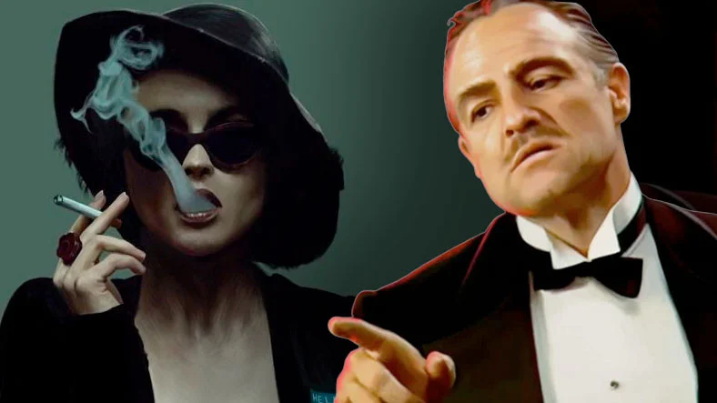

Her İnsanın En Az İki Kez İzlemesi Gereken 15 Efsane Film
Dizi ve film sektörü, birçok kişiye uçsuz bucaksız bir dünya gibi görünebilir. Öyle ki binbir türlü, birbirinden farklı birçok dizi ve film barınıyor bu dünyada. Tabii ki hepsi harika olmasa da nasıl arayacağınızı bildiğiniz sürece güzel filmleri veya dizileri izleme şansınız her zaman olacaktır. Arada çıkabilecek olan bazı çürükler ise işin tuzu biberi olacaktır. Biz de bu şekilde düşündüğümüz için her insanın izlemesi gereken 15 filmi IMDb puanlarına derlemeye karar verdik.
Film kültürü herkesin sahip olduğu bir kültür olmasa da neredeyse her insan film izlemekten keyif alır. Film izlemeyi hiç sevmeyen bir insanın bile iyisiyle kötüsüyle izlemekten keyif aldığı bir film mutlaka vardır. Ciddi anlamda film kültürü olan insanların zaten favorileri çoktan oluşmuş olsa da yine de bazı filmlerden bahsetmekte fayda var.
Dünya üzerinde olan bazı filmler, resmen nesnel bir şekilde “kesinlikle izlenmeli” yargısına sahiptir. Bu filmler kült filmler olarak kabul edilir. Genellikle bu filmler hakkında kötü konuşan pek fazla insan görmezsiniz ve tam tersi izlendiğinde değil, izlenmediğinde insanların şaşıracağı tarzda filmlerdir. Konuyu daha fazla uzatmadan izlenmesi gereken filmler listemize geçelim.
Mutlaka izlenmesi gereken filmler:
- Baba / Godfather
- Esaretin Bedeli / The Shawshank Redemption
- Schindler’ın Listesi / Schindler’s List
- Dövüş Kulübü / Fight Club
- Yüzüklerin Efendisi serisi / Lord of The Rings
- Forrest Gump
- Guguk Kuşu / One Flow Over The Cuckoo’s Nest
- Star Wars serisi
- Hayat Güzeldir / La Vita e Bella
- Yeşil yol / The Green Mile
- Geçmişin gölgesinde / American History X
- Geleceğe Dönüş serisi / Back to The Future
- Gladiator / Gladyatör
- Cesur Yürek / Braveheart
- Akıl Oyunları / A Beautiful Mind
Destansı bir mafya öyküsü: Baba / Godfather
-
Tür: Mafya, suç, polisiye, dram
-
Yıl: 1973
-
Oyuncular: Marlon Brando, Al Pacino, James Caan
-
Yönetmen: Francis Cord Coppola
- IMDb: 9,2
Godfather 40’lar ve 50’ler yılında geçen köklü bir İtalyan mafya ailesinin hikayesini konu alıyor. Baba yani Don Carleone’a karşı bir suikast düzenlenince, baba yerini ailenin en küçük oğlu Michael ve abisi Sonny’ye bırakır. İki kardeş ailenin başına geçerler fakat işleri eski usulleri ile yönetme gibi bir planları pek yoktur. Sinema sektöründeki ağırlığıyla bilinen filmlerden biri olan Godfather hem aile hem mafya olaylarına ilk elden başarılı bir bakış açısı ile yaklaşıyor.
İyimser olmanın önemi: Esaretin Bedeli / The Shawshank Redemption
-
Tür: Hapishane, gizem, drama, polisiye
-
Yıl: 1995
-
Oyuncular: Tim Robbins, Morgan Freeman, Bob Gunton
-
Yönetmen: Frank Darabont
- IMDb: 9,2
İşlemediği bir suçtan dolayı yargılanan ve ömür boyu hapis alan başarılı bankerimiz Andy Dufresne, hapishanede dayağından, işkencesine kadar türlü türlü rahatsız edici muamelelere maruz kalır. Bu kadar şeyin üstüne hala inanılması güç bir şekilde hayata karşı olan bağını, umudunu ve iyimserliğini kaybetmeyen Andy’nin bu tutumu hapishanedeki diğer insanları da etkilemeye başlar. Sarfettiği bu çaba birçok kişi tarafından farkedilmeye başlasa da en çok arkadaşı Red tarafından fark edilecektir.
Tarihin karanlık zamanları: Schindler’ın Listesi / Schindler’s List
-
Tür: Savaş, tarih, drama
-
Yıl: 1994
-
Oyuncular: Liam Neeson, Ralph Fiennes, Ben Kingsley
-
Yönetmen: Steven Spielberg
- IMDb: 9,0
Soykırım zamanlarında geçen Schinlder’s List, Oskar Schinlder isimli biraz kaçık bir karakterin 1.100 den fazla yahudiyi kendisi ile birlikte soykırımdan kurtarmaya çalışmasını konu alıyor. Tarihin oldukça karanlık bir tarafını gün yüzüne vuran Schinlder’s List, Oscar Schindler’ın gerçek öyküsüne ilk elden tanıklık etmenizi sağlıyor ve Oscar’ın sebep olduğu farklılığın tarihe ağır bir şekilde işlemesini sağlıyor.
İlk kural onun hakkında konuşmamak: Dövüş Kulübü / Fight Club
-
Tür: Aksiyon, drama, kara mizah
-
Yıl: 1999
-
Oyuncular: Brad Pitt, Edward Norton, Meat Loaf
-
Yönetmen: David Fincher
- IMDb: 8,8
Jack hayatını olabilecek en klasik şekilde yaşayan bir sigorta memurudur. Son zamanlardaki psikolojik sorunları artık başına bela olmaya başlamıştır. Bu yüzden grup terapilerine katılmaya başlar. Grup terapilerine gittiği esnada Marla adında bir kız ile tanışır. Marla’ya karşı bir ilgi beslese de işin boyutunu değiştirecek olan kişi aslında Marla’dan kısa bir süre sonra tanışacağı Tyler Durden olacaktır. Tyler, Jack’i Dövüş Kulübü ile tanıştırır ve Jack’İn hayatı bu andan itibaren tamamen değişmeye başlar. Unutmayın Dövüş Kulübünün ilk kuralı Dövüş Kulübü hakkında asla konuşmamaktır.
Dünyası, karakterleri ve konusuyla kült bir film: Yüzüklerin Efendisi serisi / Lord of The Rings
-
Tür: Aksiyon, macera, drama
-
Yıl: 2001
-
Oyuncular: Elijah Wood, Ian McKellen, Orlando Bloom
-
Yönetmen: Peter Jackson
- IMDb: 8,8
Lord of the rings, gerçekten sahip olduğu dünya, karakterler ve konusu ile bir daha yeri doldurulamayacak olan filmlerden bir tanesi. Bundan yüzyıllar önce üretilmiş olan ve o esnada dünyaya sadece kaosu getirmiş olan bir yüzük ve bu yüzüğün tekrardan ortaya çıkışı. Dünyanın yeniden kaosa sürüklenmesinin önüne geçmek için yapılabilecek tek birşey vardır, o da yüzüğü ebediyen gün yüzüne çıkmasını engellemek için yok etmek. Kendisine bu büyük görevin emanet edildiği Frodo henüz bu macerasında yaşayacaklarından habersizdir.
Öğrenme güçlüğü çeken bir çocuğun hayatı: Forrest Gump
-
Tür: Drama, romantizm
-
Yıl: 1994
-
Oyuncular: Tom Hanks, Robin Wright, Gary Sinise
-
Yönetmen: Robert Zemeckis
- IMDb: 8,8
Forrest Gump, öğrenme güçlüğü çeken fakat atletizm konusunda oldukça yetenekli olan Forrest’ın doğum yılı olan 1944 ve 1982 yılları civarında gerçekleşmiş olan 20. yüzyılın dönüm noktası olarak bilinen bazı olayları ele alıyor. Forrest bu olaylara ilk elden sebep olmasa da, kimi zaman şahitlik ederek kimi zamanda başkalarına ilham vererek bir şekilde katkı sağlar.